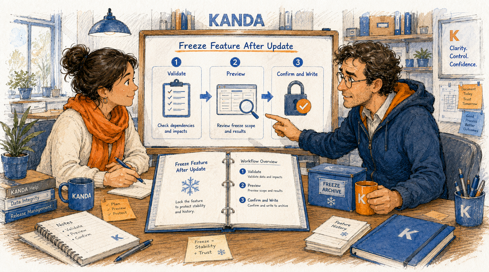
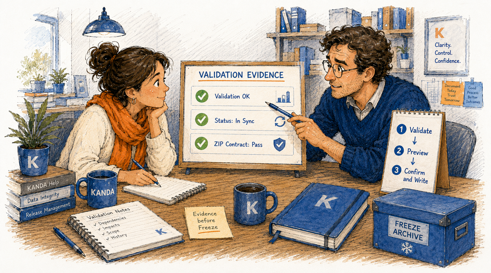
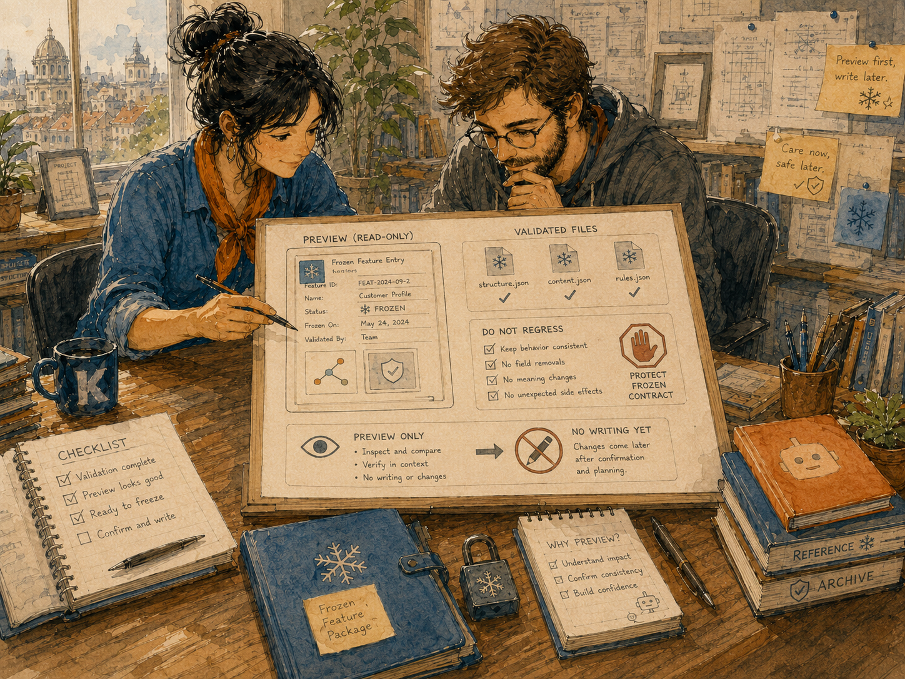
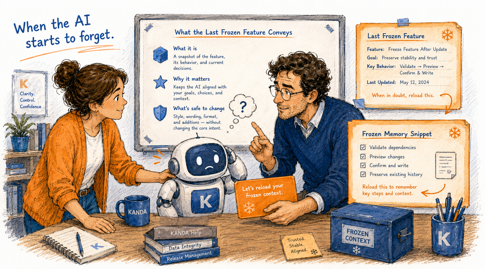

KANDA Reasoner Help
Freeze Feature After Update
A first-time user guide for recording a validated feature as protected project memory.

What This Tab Does
In plain English: this tab creates a trusted memory record after a feature has been completed and validated. The record tells future users and AI sessions what was built, which files were checked, which paths must be treated carefully, which behaviors must not regress, and which validation results proved that the feature worked.
Freezing does not lock the source code or make files impossible to edit. It creates governed project memory so later changes are deliberate.
The core rule: validate first, Preview second, Confirm and Write last.
Before You Start

Use this tab only after the current feature has been installed and validated. You should have the correct Project Root, the current feature identity, the validated file list, and real current validation output.
VALIDATION OK: <feature_id>STATUS: IN_SYNCZIP CONTRACT: PASS- Any required hash, compile, runtime, GUI, or focused-validator markers.
Installation success is not validation. Do not invent evidence or copy markers from an older feature.
Recommended First-Time Workflow
- Confirm the correct Project Root.
- Click Check Box Status.
- Use Create / Repair Box only if the structure is incomplete.
- Validate the current feature outside this tab.
- Open Local Freeze Entry.
- Refresh the current Freeze Hint or intake.
- Choose Heuristic, Local AI, or Web AI.
- Click Fill Form Now if needed.
- Review every field and remove stale information.
- Click Preview Freeze Entry.
- Read the complete preview.
- Click Confirm and Write Freeze Entry only when everything is correct.
- Confirm that startup freeze context was refreshed.
The order matters. Preview does not write. Confirm and Write is the only writing step.
Understanding the Main Tab
Project Root
The active editable project. Every intake record and freeze entry must belong to this root.
Browse...
Select the project folder itself, not the whole drive and not the sibling support folder.
Box Folder
Opens the selected project's external freeze support folder.
External AI Review Folder
Opens optional AI-send output produced by the staged compliance workflow.
Check Box Status
Inspects structure and reports valid, missing, or incomplete status. It does not write memory.
Create / Repair Box
Creates missing safe structure. It does not freeze a feature.
Prepare Freeze / AI Compliance Update
Shows in the log what a staged support-file refresh will read, write, and leave untouched.
Do it / Undo / Cancel
Executes or discards the staged support-file action. This is separate from writing a local freeze entry.
Local Freeze Entry
Opens the recommended form, Preview, and human-confirmed write workflow.
Get Last Freeze
Copies the newest protected feature for pasting back to AI.
Get All Frozen
Copies the complete active frozen context for a new or long-running AI session.
Get blueprint Freeze
Copies the exact freeze-form contract when AI output is incomplete or malformed.
The Local Freeze Entry Window
Auto-fill modes
- Heuristic: deterministic local draft from current intake.
- Local AI: configured local AI assistance.
- Web AI: configured external AI assistance.
Every mode prepares a draft only. Human review remains mandatory.
Form actions
| Action | What it does |
|---|---|
| Fill Form Now | Populates or refreshes the draft using the selected mode. |
| Copy Entry to AI | Copies the strict draft-only form prompt to the clipboard without opening a browser or external assistant. The user pastes manually; the returned draft still requires Receive, review, Preview, and human Confirm and Write. |
| Receive Formulary from AI | Imports a returned marker-wrapped draft. It still requires validation and Preview. |
| Preview Freeze Entry | Builds a read-only exact preview. It writes nothing. |
| Confirm and Write Freeze Entry | Writes governed memory after explicit human confirmation. |
| Ignore this Freeze | Deletes and forgets the currently displayed unfrozen Freeze candidate, removes its exact transient staged source when safe, clears the form and Preview, and keeps this window open. A minimal ignored-by-human consumption tombstone is retained so the exact ignored source cannot be re-imported while genuinely different newer repairs remain eligible. Already frozen memory is never changed. |
| Cancel | Closes the window without writing. |
Every Freeze Field Explained
| Field | What to enter |
|---|---|
| Feature title | The exact current human-readable feature name. |
| Primary box | The project-relative owner path or architectural area. |
| Box type | A category such as GUI Box, Module Box, Tool Box, Prompt Box, or Documentation Box. |
| Validated files | One project-relative file per line. Include only files actually checked. |
| Generated files | Artifacts produced by the feature, or n/a. |
| Protected paths | Paths future work must treat carefully. |
| Do-not-regress rules | One preserved behavior, layout rule, contract, or safety boundary per line. |
| Validation evidence | Current recognizable success markers and a concise evidence summary. |
| Known warnings | Real remaining cautions or n/a. |
| Planned next step | Usually Preview, then Confirm and Write after review. |
| Notes | Why the feature was frozen and what future users or AI should understand. |
Preview Freeze Entry Is Read-Only

Preview must show the complete feature identity, files, protected paths, rules, evidence, warnings, next step, and notes.
Stop if the preview contains the wrong feature, stale paths, placeholders, copied evidence, or unrelated files.
Confirm and Write Is Final Human Authority
Confirm and Write Freeze Entry is the only step that writes governed frozen memory. The tab must not automatically write merely because validation passed or a form was auto-filled.
After success, the entry, index, and startup freeze context are refreshed for future AI sessions.
Where the Information Lives
Editable project:
<project_drive>/<project_name>
Freeze intake:
<project_drive>/<project_name>_show_project_to_AI/project_freeze_after_update/freeze_hint_intake
Frozen memory:
<project_drive>/<project_name>_show_project_to_AI/project_freeze_after_update/frozen_features_memory
Do not place project-specific intake or frozen memory inside project_freeze_ledger. That location owns reusable blueprint logic only.
When the AI Starts to Forget

- Get Last Freeze: newest protected feature.
- Get All Frozen: broader active frozen context.
- Get blueprint Freeze: exact form and JSON contract.
Paste the copied material into the AI conversation and identify it as read-only frozen feature memory.
Common Problems and Safe Recovery
Current Freeze intake record is unavailable
Run the current package validation and confirm that the current feature's intake and evidence were created. Do not fabricate or reuse an older intake.
Missing validated files or evidence
Add only files actually checked and markers actually observed.
Preview shows the wrong feature
Stop, refresh the current Freeze Hint, correct the form, and Preview again.
Confirm and Write is blocked
Read the error and log. Check mandatory fields, intake identity, evidence, and whether the Preview still matches the form.
I only want to inspect
Use Preview, Get Last Freeze, Get All Frozen, or Box Folder. Do not click Confirm and Write.
Complete First-Time Example
A help-page update has been installed and validated. Its output includes current source and rendered-file checks, unchanged image-asset checks, VALIDATION OK, STATUS: IN_SYNC, and ZIP CONTRACT: PASS.
Open this tab, confirm the Project Root, check box status, open Local Freeze Entry, refresh the current hint, and inspect every field. Confirm that the title, validated files, protected paths, and evidence belong to this help update. Preview the whole record. Only then click Confirm and Write.